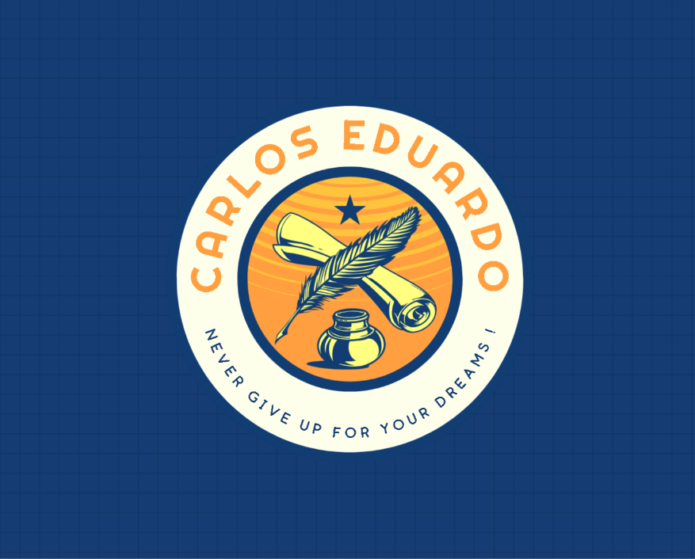

Bem-vindo ao Meu Site!
Este é um exemplo de conteúdo que pode ser colocado em sua página principal. Aqui você pode adicionar qualquer tipo de informação relevante para os visitantes do seu site.
Sobre o Site
Este site foi criado para demonstrar o uso de uma barra de navegação fixa com efeitos de expansão e contração. A sidebar se expande quando o usuário passa o mouse sobre ela e exibe mais opções de navegação.
Imagem Exemplo

Objetivo do Projeto
O objetivo deste projeto é criar uma interface simples e funcional com navegação lateral. Ele serve como uma base para criar layouts mais complexos com foco na usabilidade e design responsivo.